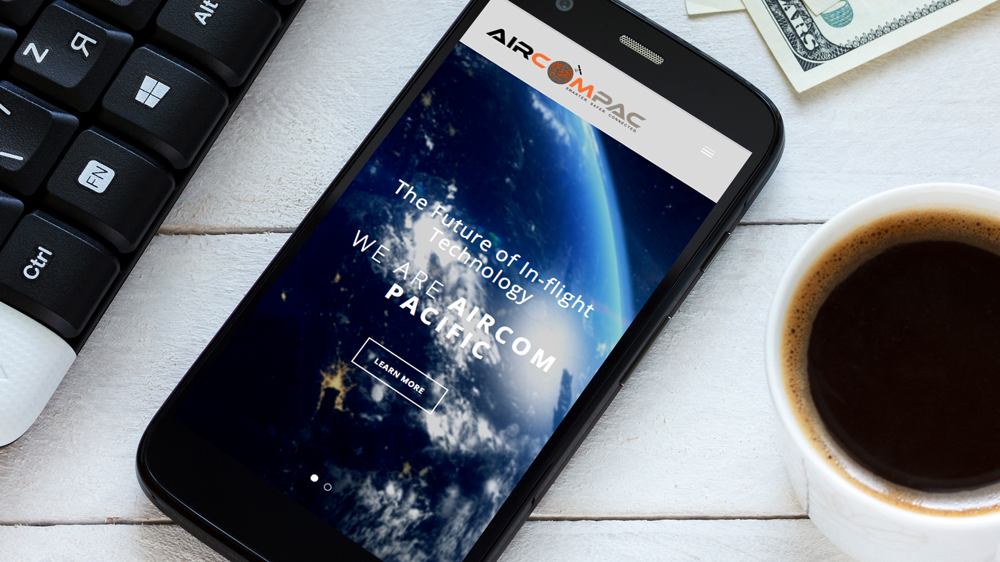

What We Do
Our Products & Services
WIFI BROADBAND INTERNET
The world is abuzz about wireless connectivity. With passengers now bringing Personal Electronic Devices (PEDs) on-board in record numbers, providing a Wi-Fi connection to stream the latest movies and TV shows to their devices is a natural evolution of IFE. AirCom Pacific has developed a Wireless IFE solution that is low cost to install and maintain. Content loading is also handled, wirelessly through our WADL solution which eliminates the need to manually load content, enabling us to keep your content fresh – hands free. With Wireless IFE now in place, you’re just one small step away from in-cabin connectivity. Please check out our suite of connectivity products that can provide off-aircraft connectivity solutions for your entire fleet.
CABLE & STREAMING ENTERTAINMENT
With AirCom Pacific in-seat video, every passenger on your aircraft gets a personal TV screen and the potential for over 100 channels of live satellite programming, a GPS map channel, and additional channels of stored content. So whether your guests want to watch the World Series or the weather, the nightly news or a movie, our gate-to-gate viewing options will keep them happily entertained. And with multiple channels of children’s programming, we make sure no child is left behind.
DUTY FREE SHOPPING
Say goodbye to limited purchasing power, inflight shopping that’s rarely updated and product ranges that rarely change. With AirCom Pacific’s Duty Free channels, passengers can have access to much larger range of Duty Free items and other online shopping favorites like QVC or Alibaba! Duty Free orders can be forwarded to destination shops and gathered for delivery to passengers upon landing.
CELLULAR CONNECTIVITY
Life doesn’t stop when you board an airplane, why should your ability to communicate with loved ones, friends or colleagues? With AirCom Pacific’s integrated services we can provide passengers the same uninterrupted 2,3 and 4G services they enjoy on the ground. AirCom Pacific keeps you connected.
BLACKBOX LIVE
With passengers’ comfort and entertainment taken care of, the most important focus for the Airline remains safety. Using BlackboxLive service creates a constant-live data, video and audio backup from the aircraft’s on-board black box device to a secured server. Sharing and storing crucial, and at times, life saving information.
STREAMING GAMING
With AirCom Pacific streaming gaming you can play your favorite and most popular console and PC games right from your seat. Imagine playing the latest first-person shooter with other passengers on your flight!
MULTI-BAND (Ku & Ka) BROADBAND
If 100% global coverage (including the poles) with the lowest cost per Mbyte is what you want, then you are in the right place. Only AirCom Pacific can provide a truly 100% pole-to-pole global coverage, broadband solution. With one low rate your passengers are covered with affordable bandwidth and your airline has a future-proof technology on-board. With our multi-band solution, Ka-band is already available to take advantage of future satellites that will grow global capacity and reduce the cost of bandwidth.
FASTEST INFLIGHT WI-FI
In-flight connectivity services have evolved and consumers want to browse the web and stream video more like their home experience. Only AirCom Pacific, by leveraging our leadership in high-capacity Ka-band satellite technology, is poised to respond to the simultaneous growth of take rate and bandwidth demanded by passengers. The AirCom Pacific service is capable of delivering 12 Mbps to each passenger on the plane no matter how many connect. Competing in-flight services are based simply on an aggregate amount of bandwidth to the plane that leaves passengers contending for service. With the AirCom Pacific service, airlines can let business and leisure travelers do more in the air than they thought was possible, including video chats and streaming media. This is the only service that lets everyone use the Internet the way they want. Our service offers the best experience to the passenger while the economics of Ka-band give a sustainable advantage to the airline.